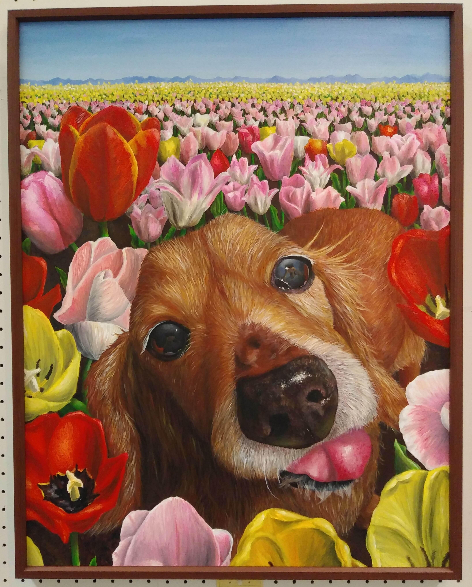
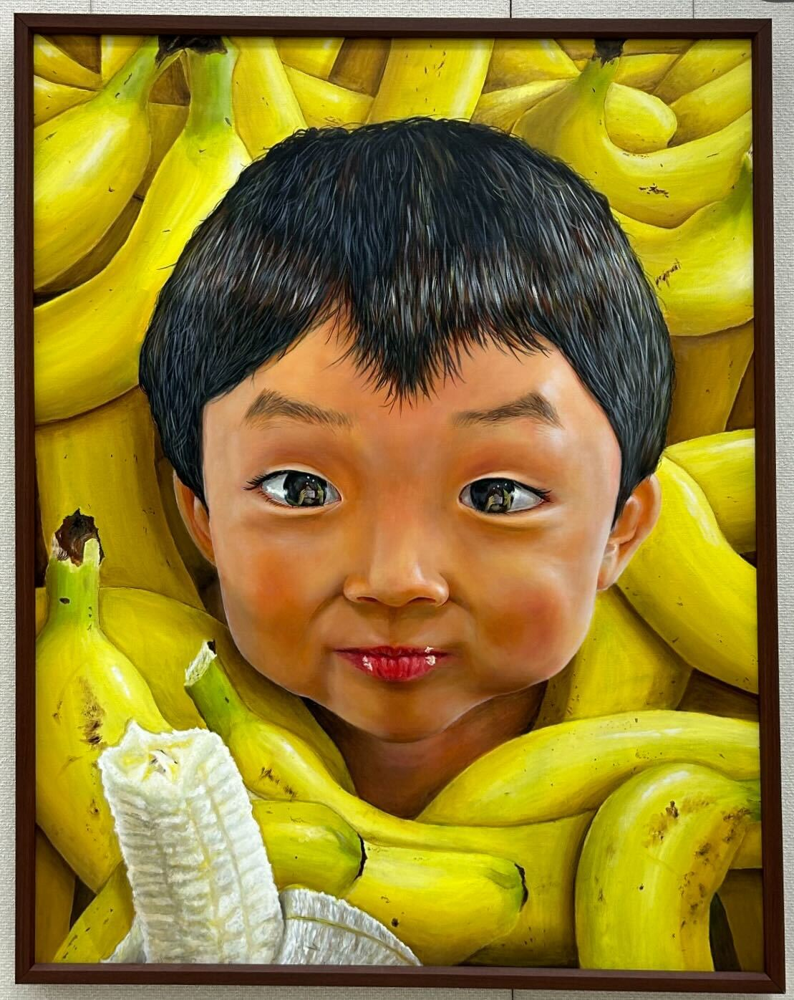

mint
About
プログラミングをすることが好きです。
ゲーム開発に興味があります。
Profile
mint
埼玉県
Web 開発
Skills
Tool, MiddleWare
Git, GitHubなど
資格・免許
英検準二級、数検三級
Contact
連絡先
Mail
History
学歴、表彰・受賞歴
2024 年
川越南高校 卒業
2025 年
学校法人角川ドワンゴ学園
ZEN大学
入学
2022 年
第70回埼玉県美術展覧会
入選 （題名:君と華、画像:左）
2022 年
埼玉県高校美術展
優秀賞、
第47回全国高等学校総合文化祭鹿児島大会
代表 （題名:君の幸、画像:右）
 